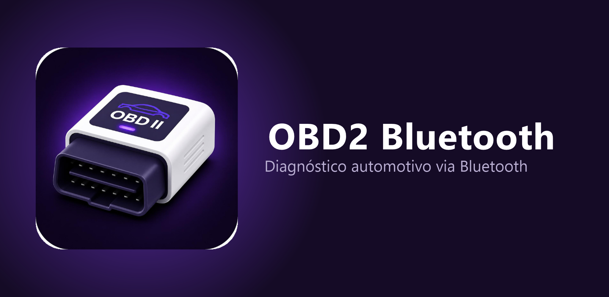
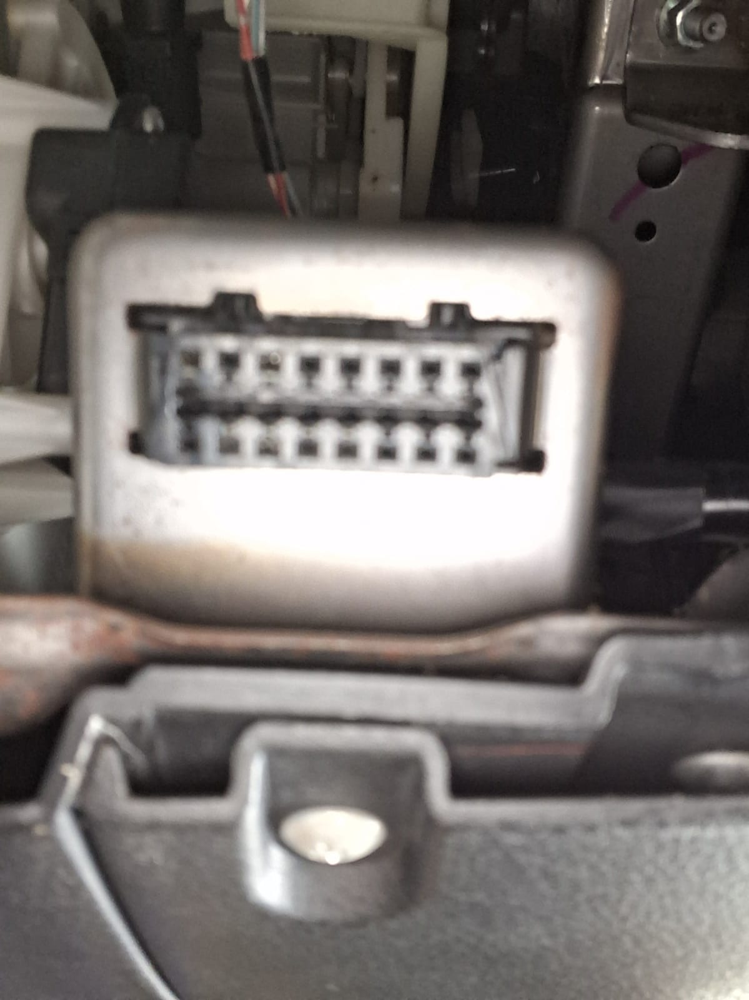
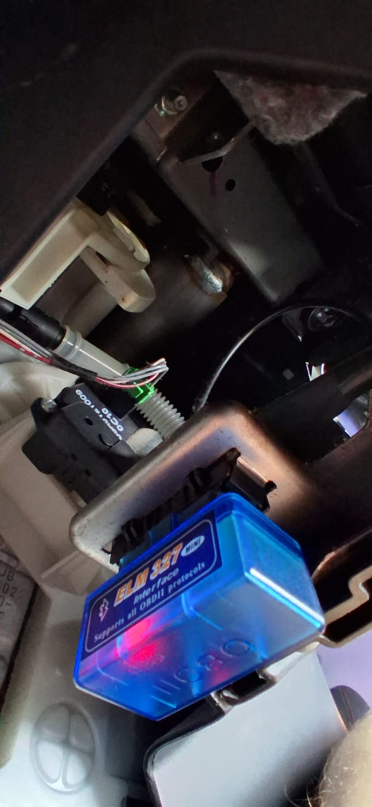
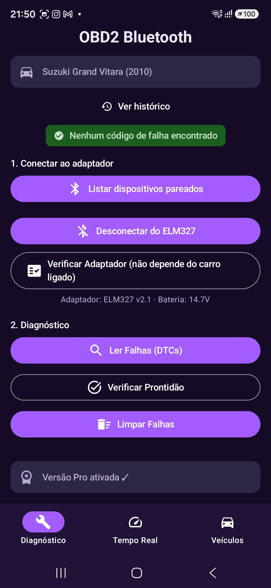

Guia rápido para instalar o adaptador e começar a diagnosticar seu carro
Como o app ainda está na fase de testes fechados, você precisa entrar na lista de testadores antes de conseguir instalar pela Play Store.
Envie seu e-mail da Conta Google pra quem te convidou — assim que você for adicionado à lista, vai receber um link de acesso que abre direto na Play Store.
O aplicativo não funciona sozinho — ele precisa de um adaptador físico, plugado no carro, que se comunica por Bluetooth com o celular.
Se você ainda não tem um, aqui está o modelo que testamos e recomendamos:
Comprar no Mercado LivreEm praticamente todos os carros fabricados a partir dos anos 2000, essa porta fica embaixo do painel, do lado do motorista, perto da coluna de direção — às vezes visível, às vezes atrás de uma tampinha plástica que se solta com a mão.

Porta OBD-II (vazia)O conector só entra de um jeito (é "macho-fêmea" guiado), então não tem como errar o encaixe. Empurre com firmeza até sentir que encostou de vez.

Adaptador conectadoVá em Configurações → Conexões → Bluetooth do seu celular, procure por dispositivos disponíveis e toque no nome do adaptador (geralmente aparece como OBDII, ELM327 ou algo parecido).
Se pedir uma senha de pareamento, tente 0000 ou 1234 — são as senhas padrão da grande maioria dos adaptadores.
Com o adaptador pareado, abra o OBD2 Bluetooth e, na aba Diagnóstico:
1. Toque em "Listar dispositivos pareados" e selecione o adaptador.
2. Toque em "Conectar ao ELM327" e aguarde a confirmação.
3. Pronto! Agora você pode ler falhas, verificar prontidão pra inspeção, ver dados em tempo real e mais.

Tela de Diagnóstico já conectada, sem nenhuma falha encontrada